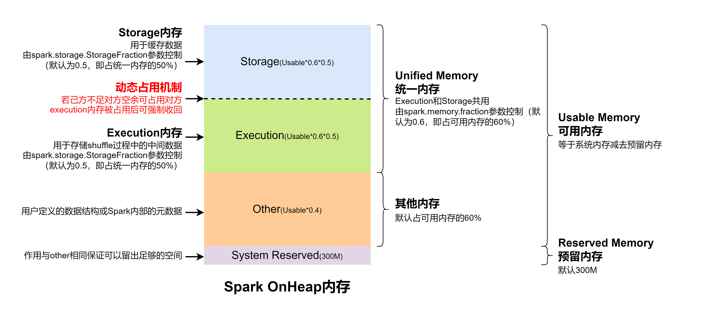
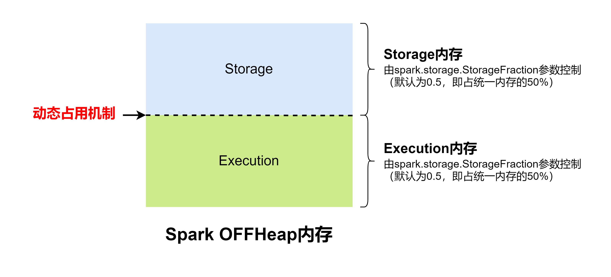
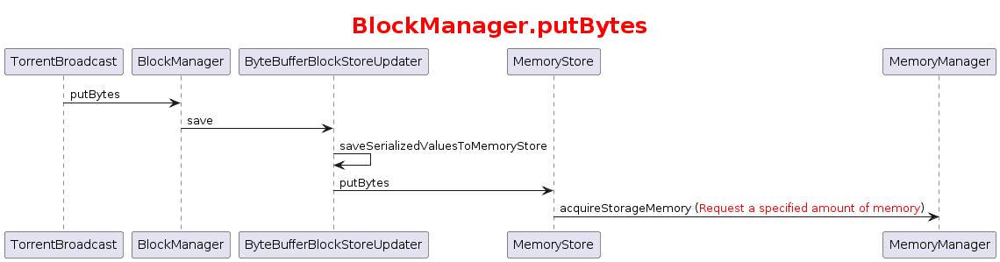

Spark内存管理，主要包括Spark的堆内内存和堆外内存、内存管理机制等
源码版本是Spark 3.1.2
Spark堆内堆外内存 Spark内存分为堆内内存（ON_HEAP）和堆外内存（OFF_HEAP），其中堆内内存基于JVM内存模型，堆外内存通过调用底层JDK Unsafe API。两种内存类型统一由Spark MemoryManager实现
堆内内存 Executo作为一个JVM进程，其内部基于JVM的内存管理模型。Spark在其之上封装了统一的内存管理接口MemoryManager，通过对JVM堆空间进行合理的规划(逻辑上)，完成对象实例内存空间的申请和释放。保证满足Spark运行机制的前提下，最大化利用内存空间
这里涉及到的JVM堆空间概念，简单描述就是在程序中，关于对象实例/数组的创建、使用和释放的内存，都会在JVM中的一块被称作为”JVM堆”内存区域内进行管理分配。Spark程序在创建对象后，JVM会在堆内内存中分配一定大小的空间，创建Class对象并返回对象引用，Spark保存对象引用，同时记录占用的内存信息
Spark中堆内内存参数有: -executor-memory。通常是任务提交时在参数中进行定义，且与-executor-cores等相关配置一起被提交至ResourceManager中进行Executor的资源申请。在Worker节点创建一定数目的Executor，每个Executor被分配-executor-memory大小的堆内内存。Executor的堆内内存被所有的Task线程任务共享，多线程在内存中进行数据交换
Spark堆内内存主要分为Storage(存储内存)、Execution(执行内存)和Other(其他) 几部分
Storage用于缓存RDD数据和broadcast广播变量的内存使用
Execution仅提供shuffle过程的内存使用
Other提供Spark内部对象、用户自定义对象的内存空间
堆外内存 Spark1.6在堆内内存的基础上引入了堆外内存，进一步优化了Spark内存的使用率。堆外内存其底层调用基于C的JDK Unsafe类方法，通过指针直接进行内存的操作，包括内存空间的申请、使用、删除释放等。
Spark在2.x之后，摒弃了之前版本的Tachyon，采用Java中常见的基于JDK Unsafe API来对堆外内存进行管理。此模式不在JVM中申请内存，而是直接操作系统内存，减少了JVM中内存空间切换的开销，降低了GC回收占用的消耗，实现对内存的精确管控。
堆外内存默认情况下是不开启的，需要在配置中将spark.memory.offHeap.enabled设为True,同时配置spark.memory.offHeap.size参数设置堆大小。对于堆外内存的划分，仅包含Execution(执行内存)和Storage(存储内存)两块区域，且被所有task线程任务共享。
MemoryManager MemoryManager用来管理Spark的内存，主要包含计算内存和存储内存的管理，在Spark1.6版本之前使用的是静态内存管理机制（Static Memory Manager），Spark计算和存储使用的内存都是静态的，通过参数调整大小；Spark1.6以后考虑到内存管理的灵活性改成了统一内存管理(Unified Memory Manager)
统一内存管理 在看Spark3.1.2版本的代码时发现Spark只能使用统一内存管理机制进行内存管理，所以对静态内存管理不过多赘述
on-heap 
堆内内存整体划分为Usable Memory(可用内存)和Reversed Memory(预留内存)两大部分。其中预留内存作为OOM等异常情况的内存使用区域，默认被分配300M的空间。可用内存可进一步分为(Unified Memory)统一内存和Other内存其他两部分，默认占比为6:4
统一内存中的Storage(存储内存)和Execution(执行内存)以及Other内存，其参数及使用范围均与静态内存模式一致，只是Storage、Execution之间启用了动态内存占用机制。动态内存占用机制：
设置内存的初始值，即Execution和Storage均需设定各自的内存区域范围(默认参数0.5)
若存在一方内存不足，另一方内存空余时，可占用对方内存空间
双方内存均不足时，需落盘处理
Execution内存被占用时，Storage需将此部分转存硬盘并归还空间
Storage内存被占用时，Execution无需归还
off-heap 
和静态管理模式分配一致，堆外内存默认值为384M。整体分为Storage和Execution两部分，且启用动态内存占用机制，其中默认的初始化占比值均为0.5
UnifiedMemoryManager初始化 UnifiedMemoryManager是MemoryManager的实现类，它在SparkEnv中实例化，通过调用伴生对象的apply方法构建对象
1 2 3 4 5 6 7 8 9 10 def apply SparkConf , numCores: Int ): UnifiedMemoryManager = { val maxMemory = getMaxMemory(conf) new UnifiedMemoryManager ( conf, maxHeapMemory = maxMemory, onHeapStorageRegionSize = (maxMemory * conf.get(config.MEMORY_STORAGE_FRACTION )).toLong, numCores = numCores) }
getMaxMemory方法则是根据配置参数确定执行和存储的内存
1 2 3 4 5 6 7 8 9 10 11 12 13 14 15 16 17 18 19 20 21 22 23 24 25 private def getMaxMemory SparkConf ): Long = { val systemMemory = conf.get(TEST_MEMORY ) val reservedMemory = conf.getLong(TEST_RESERVED_MEMORY .key, if (conf.contains(IS_TESTING )) 0 else RESERVED_SYSTEM_MEMORY_BYTES ) val minSystemMemory = (reservedMemory * 1.5 ).ceil.toLong if (systemMemory < minSystemMemory) { throw new IllegalArgumentException (s"System memory $systemMemory must " + s"be at least $minSystemMemory . Please increase heap size using the --driver-memory " + s"option or ${config.DRIVER_MEMORY.key} in Spark configuration." ) } if (conf.contains(config.EXECUTOR_MEMORY )) { val executorMemory = conf.getSizeAsBytes(config.EXECUTOR_MEMORY .key) if (executorMemory < minSystemMemory) { throw new IllegalArgumentException (s"Executor memory $executorMemory must be at least " + s"$minSystemMemory . Please increase executor memory using the " + s"--executor-memory option or ${config.EXECUTOR_MEMORY.key} in Spark configuration." ) } } val usableMemory = systemMemory - reservedMemory val memoryFraction = conf.get(config.MEMORY_FRACTION ) (usableMemory * memoryFraction).toLong }
而在创建实例对象时又初始化了几个属性用来跟踪execution和storage内存的使用情况（在父类MemoryManager中初始化）
1 2 3 4 5 6 7 8 9 10 11 12 13 14 15 16 17 protected val onHeapStorageMemoryPool = new StorageMemoryPool (this , MemoryMode .ON_HEAP )protected val offHeapStorageMemoryPool = new StorageMemoryPool (this , MemoryMode .OFF_HEAP )protected val onHeapExecutionMemoryPool = new ExecutionMemoryPool (this , MemoryMode .ON_HEAP )protected val offHeapExecutionMemoryPool = new ExecutionMemoryPool (this , MemoryMode .OFF_HEAP )onHeapStorageMemoryPool.incrementPoolSize(onHeapStorageMemory) onHeapExecutionMemoryPool.incrementPoolSize(onHeapExecutionMemory) protected [this ] val maxOffHeapMemory = conf.get(MEMORY_OFFHEAP_SIZE )protected [this ] val offHeapStorageMemory = (maxOffHeapMemory * conf.get(MEMORY_STORAGE_FRACTION )).toLong offHeapExecutionMemoryPool.incrementPoolSize(maxOffHeapMemory - offHeapStorageMemory) offHeapStorageMemoryPool.incrementPoolSize(offHeapStorageMemory)
MemoryManager初始化完成后，它会被传到Driver和每个Executor的BlockManager和SparkEnv中等待调用
MemoryManager的使用 以将数据写入堆内内存的广播变量为例，最终调用BlockManager.putBytes方法，接下来的调用逻辑看下图，这里只看与MemoryManager交互的部分

1 2 3 4 5 6 7 8 9 10 11 12 13 14 15 16 17 18 19 20 21 22 23 24 25 26 27 28 29 30 31 32 33 34 override def acquireStorageMemory blockId: BlockId , numBytes: Long , memoryMode: MemoryMode ): Boolean = synchronized { assertInvariants() assert(numBytes >= 0 ) val (executionPool, storagePool, maxMemory) = memoryMode match { case MemoryMode .ON_HEAP => ( onHeapExecutionMemoryPool, onHeapStorageMemoryPool, maxOnHeapStorageMemory) case MemoryMode .OFF_HEAP => ( offHeapExecutionMemoryPool, offHeapStorageMemoryPool, maxOffHeapStorageMemory) } if (numBytes > maxMemory) { logInfo(s"Will not store $blockId as the required space ($numBytes bytes) exceeds our " + s"memory limit ($maxMemory bytes)" ) return false } if (numBytes > storagePool.memoryFree) { val memoryBorrowedFromExecution = Math .min(executionPool.memoryFree, numBytes - storagePool.memoryFree) executionPool.decrementPoolSize(memoryBorrowedFromExecution) storagePool.incrementPoolSize(memoryBorrowedFromExecution) } storagePool.acquireMemory(blockId, numBytes) }
从execution占用内存后仍然不够尝试删掉其他block，如有必要（isUseDisk）则将它存到磁盘中
1 2 3 4 5 6 7 8 9 10 11 12 13 14 15 16 17 def acquireMemory blockId: BlockId , numBytesToAcquire: Long , numBytesToFree: Long ): Boolean = lock.synchronized { assert(numBytesToAcquire >= 0 ) assert(numBytesToFree >= 0 ) assert(memoryUsed <= poolSize) if (numBytesToFree > 0 ) { memoryStore.evictBlocksToFreeSpace(Some (blockId), numBytesToFree, memoryMode) } val enoughMemory = numBytesToAcquire <= memoryFree if (enoughMemory) { _memoryUsed += numBytesToAcquire } enoughMemory }
释放内存就是清空跟踪状态，真正的数据都在MemoryStore存着，MemoryManager只是跟踪记录存储大小状态而已
MemoryStore 数据以MemoryEntry的方形式存在private val entries = new LinkedHashMap[BlockId, MemoryEntry[_]]中，MemoryStore要做的就是对外提供接口对entries进行管理，由MemoryManager跟踪管理可用内存情况